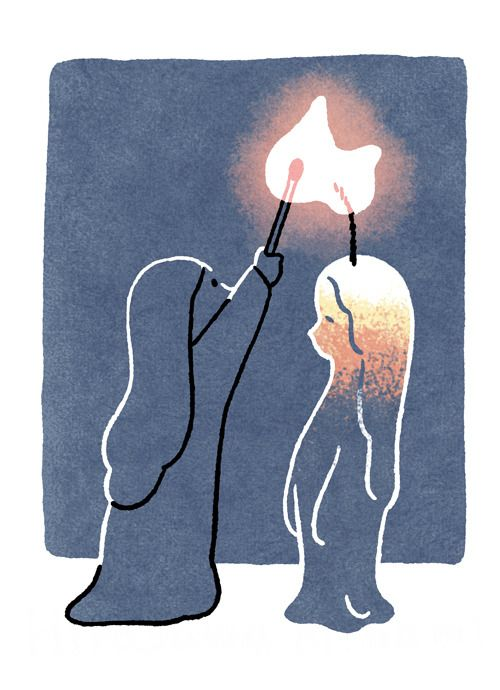

Medical and Psychological Treatments
Insomnia can be managed, and recovery begins with understanding how the mind and body respond to rest. While there is no universal cure, consistent habits and the right mindset can greatly reduce its effects. Treatment often requires patience, self-awareness, and the willingness to change long-standing routines that interfere with sleep. One of the most effective treatments is Cognitive Behavioral Therapy for Insomnia (CBT-I). It helps people identify unhelpful thoughts about sleep, reduce the anxiety that builds up at night, and retrain the body to associate the bed only with rest. Instead of lying awake and worrying, patients learn practical methods—such as getting up briefly when unable to sleep or setting consistent bedtimes—that restore balance to their circadian rhythm. Medication can also be helpful for short periods, especially when the lack of rest has become severe. However, pills should never be the only solution; they work best when combined with behavioral therapy or lifestyle adjustments.
Healthy Habits and Mind-Body Practices
Healthy sleep habits play an equally crucial role. Maintaining a regular bedtime and wake-up time keeps the body clock stable. Avoiding caffeine, alcohol, and nicotine in the evening helps the nervous system wind down naturally. Turning off screens one hour before bed reduces blue-light exposure, which suppresses melatonin production. Creating a comfortable sleeping environment—dim light, cooler temperature, clean bedding, and calm scents—signals safety to the brain and allows it to rest. Mind-body practices can also calm the system before sleep. Gentle stretching, slow breathing, or brief meditation help release tension that accumulates throughout the day. Some people find comfort in aromatherapy, soft background music, or ambient sounds like rainfall or ocean waves. Regular light exercise, such as walking or yoga, promotes better nighttime rest and reduces anxiety.
From the melodic sounds of street musicians in Washington Square Park to the peaceful resonance of The Cloisters overlooking the Hudson River, each carefully selected destination offers its own unique frequency.
Coping Strategies and Professional Help
Coping strategies during sleepless nights are just as important as prevention. Instead of forcing yourself to sleep, accept the wakefulness calmly. Getting out of bed to read, write, or drink warm tea in dim light can help reset your rhythm. Keeping a “sleep diary” to record bedtime, mood, and activities can reveal hidden patterns—like stress peaks or caffeine timing—that interfere with rest. Finally, seeking professional help is a sign of care, not weakness. When insomnia lasts more than a few weeks, consulting a doctor or sleep specialist can prevent it from becoming chronic. Support groups, therapy, or medical evaluation can uncover underlying issues such as depression, anxiety, or hormonal imbalance. Insomnia should not be seen as a personal failure; it is a treatable condition that reflects the modern world’s pressure and pace. With guidance, discipline, and self-kindness, it is possible to reclaim peaceful nights and wake up renewed.
